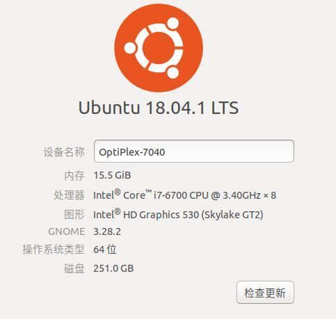

Ubuntu OS
Directory
一、备份系统
背景：公司为每人加装一块256G固态硬盘，为了让系统运行在固态硬盘上，又不想重装系统，主要是新系统装软件，配置这配置那的烦！备份还原这种方式更适合
/dev/sda7 为当前要备份的Linux系统盘（以下称系统磁盘）
/dev/sda6 为存放备份Linux系统的备份盘（以下称备份磁盘）
/dev/sdb1 为接受还原系统的空磁盘（以下称还原磁盘）
//1.获得root权限
$ sudo -s
//2.查看当前分区状况
$ fdisk -l
//3.挂载系统磁盘到mnt目录
$ mount /dev/sda7 /mnt
//4.挂载备份磁盘到media目录
$ mount /dev/sda6 /media
//5.备份系统，将系统磁盘数据备份到备份磁盘的backup.sfs中
$ mksquashfs /mnt/ /media/backup.sfs
//6.同步存盘 让系统保存数据
$ sync
//7.卸载系统磁盘和备份磁盘
$ umount /mnt
$ umount /media
二、还原系统
//1.获得root权限
$ sudo -s
//2.查看当前分区状况
$ fdisk -l
//3.格式化还原磁盘
$ mkfs.ext4 /dev/sdb1
//4.挂载还原磁盘到mnt目录
$ mount /dev/sdb1 /mnt
//5.挂载备份磁盘到media目录
$ mount /dev/sda6 /media
//6.创建临时目录
$ mkdir /recovery
//7.挂载镜像文件
$ mount -o loop /media/backup.sfs /recovery
//8.复制文件到还原磁盘
$ cp -a /recovery/* /mnt
//9.挂载虚拟文件系统，这是为了后面修复引导做准备
$ mount --o bind /dev /mnt/dev
$ mount --o bind /proc /mnt/proc
$ mount --o bind /sys /mnt/sys
$ mount --o bind /run /mnt/run（这一步可以省略）
//10.把根目录换成还原磁盘所在目录
$ chroot /mnt/
//11.查看还原磁盘文件系统UUID和类型，格式化了分区后UUID发生了变化，若不修改，系统将无法正常挂载分区，导致启动异常。
$ blkid /dev/sdb1
// /dev/sdb1: UUID="9002cf6e-db33-43e3-bdd1-076724087a53" TYPE="ext4" PARTUUID="00bdd9ac-01"
//12.修改UUID设置
$ vi /etc/fstab
//<file system> <mount point> <type> <options> <dump> <pass>
//1.文件系统 2.挂载点 3.类型 4.选项 5.0表示不备份 6.必须为0或2(除非引导分区为1)
//修改挂载点为/的UUID
//UUID=9002cf6e-db33-43e3-bdd1-076724087a53 / ext4 errors=remount-ro 0 1
//13.更新GRUB 因为UUID被改动，所以我们需要更新GRUB。
$ grub-install /dev/sdb （sdb是你主硬盘的位置）
$ update-grub
//14.退出chroot
$ exit
//15.卸载文件系统
$ umount /mnt/dev
$ umount /mnt/proc
$ umount /mnt/sys
$ umount /mnt/run
//16.同步存盘 让系统保存数据
$ sync

三、装windows+ubuntu双系统之引导修复
出现问题：
- 情况1. 在windows的基础上安装ubuntu，报错“无法将grub-efi-amd64-signed软件包安装到/target/，如果没有GRUB启动引导器，所安装的系统将无法启动”
- 情况2：在win10的基础上安装了ubuntu，但是后来重新安装了win10，导致ubuntu的引导消失。
解决方案：
- 制作一个U盘启动盘。
- 打开电脑后选择u盘启动盘，然后选择try ubuntu without install（试用不安装）
- 进入ubuntu系统后，连接好网络，ctrl+alt+T 打开终端，输入下面命令
sudo add-apt-repository ppa:yannubuntu/boot-repair sudo apt update sudo apt install boot-repair && boot-repair - 会出现如下界面，选择‘推荐修复’（recommended repair）
- 按照boot repair提示的一步步操作
- 执行以下命令，更新GRUB启动引导器，完成后重启电脑
sudo update-grub && sudo update-grub2
四、Ubuntu18.04优化
-
下载执行shell：Ubuntu常用软件
- gnome优化软件扩展
1 Dash to Dock 2 No title bar 全屏时应用标题栏延伸到状态栏 3 Topicons plus 顶栏显示应用图标 4 Simple net speed 顶栏显示网速 - gnome优化软件基本设置
1.窗口 — 放置 选择‘左’ 2.扩展 － ‘Dash to Dock’ － 点击小齿轮 － 行为 滚动动作（选择‘在窗口间循环’） 3.扩展 － ‘Dash to Dock’ － 点击小齿轮 － 外观 Customize windows counter indicators (选择‘点’)